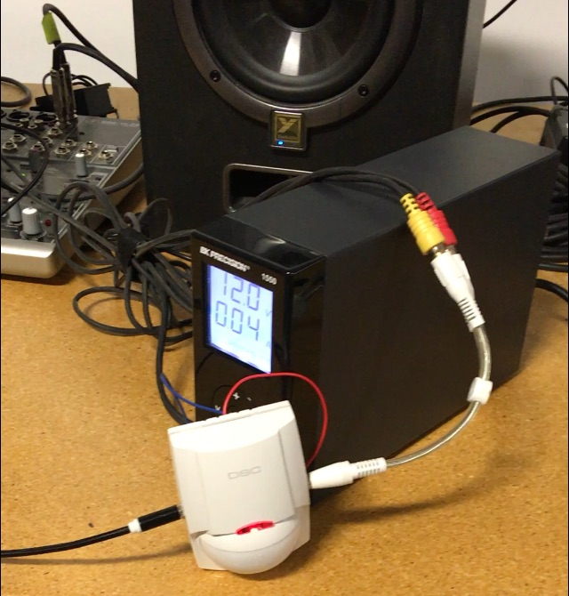
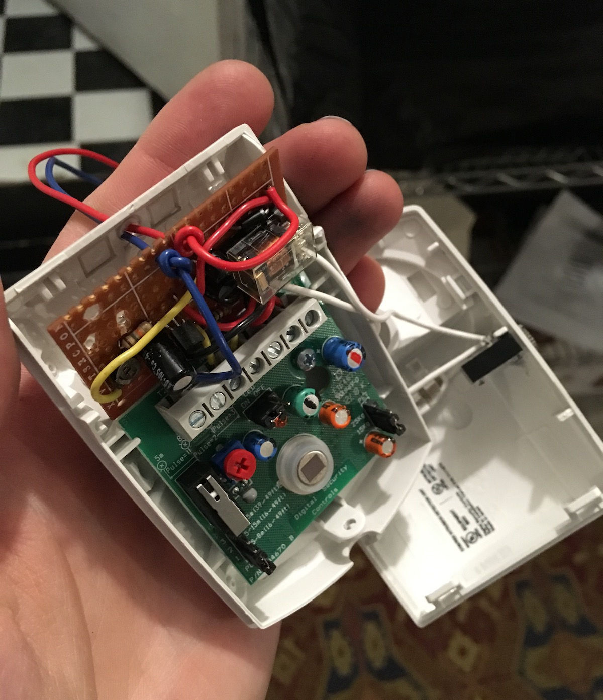
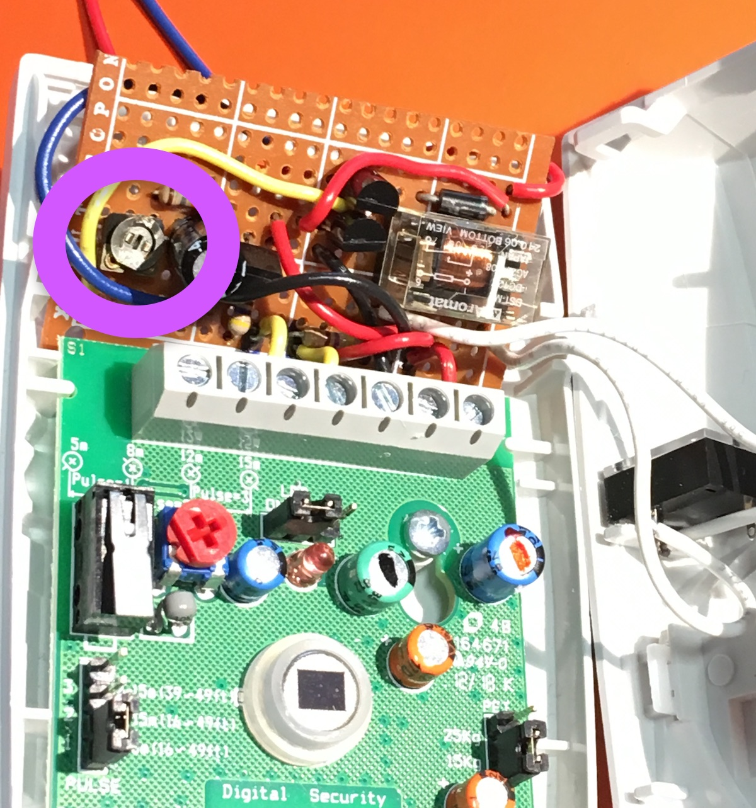
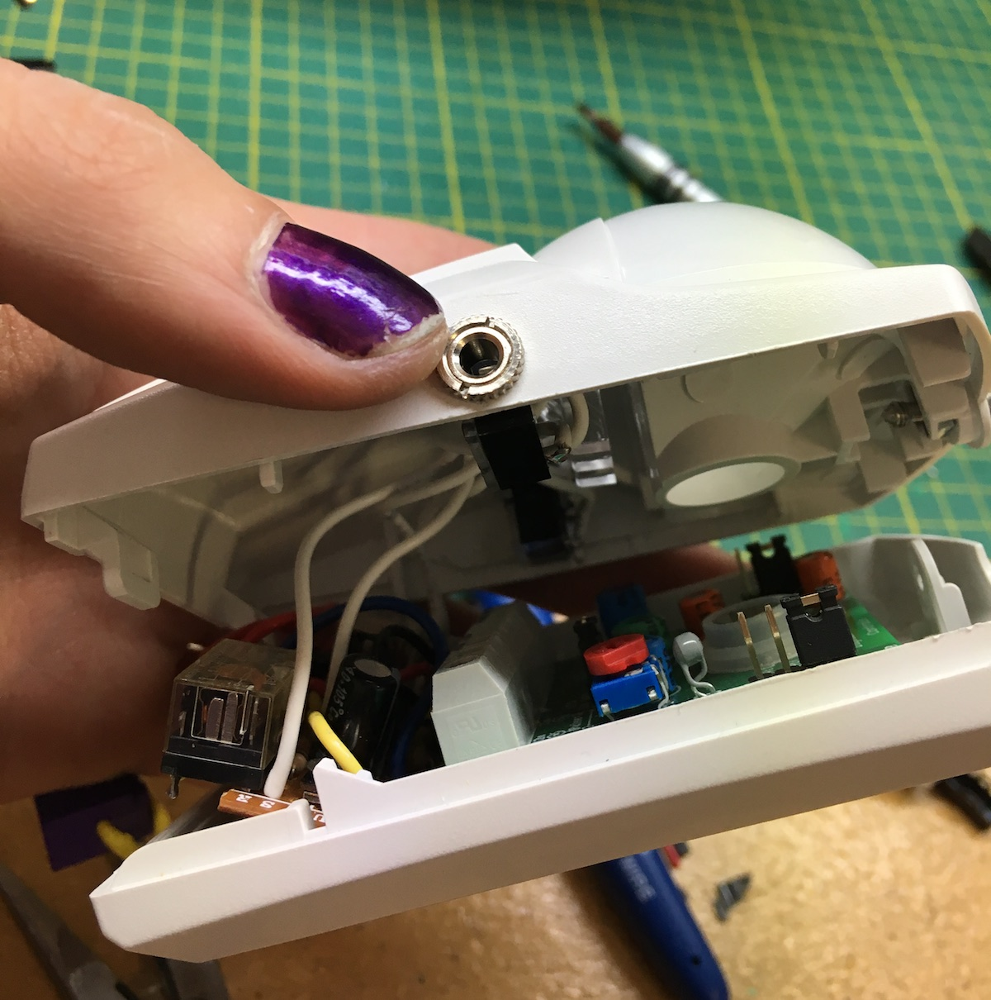
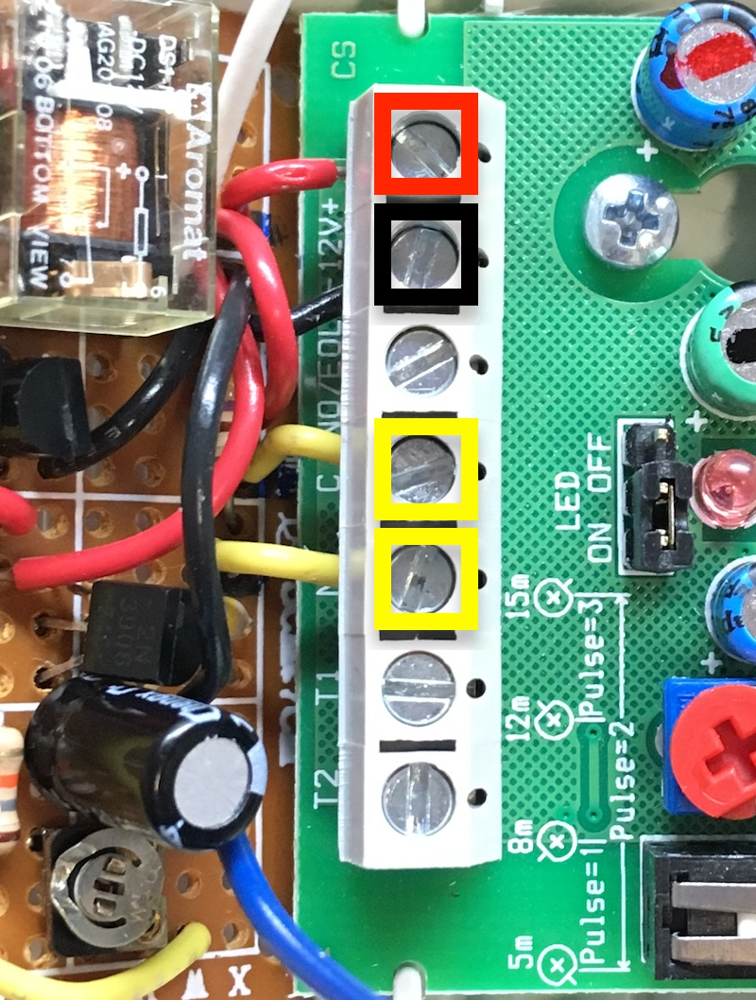

Motion Sensor Audio Switch
Fix your hearts or die is a call to action wherein the stasis of maintaining the status quo is equivalent to death, either metaphorical or real. It is a call to viewers to engage with difficult or challenging topics and the complex intersections that are present for Indigenous artists. Cheryl L’Hirondelle uses a prospector tent, projection, and sound to create a space where alternate cognitions and a self-determining existence as a self-described half-breed woman exhibits and transmits unconventional, seer-like illuminations. Daniel Cardinal McCartney lays bare the disruption of his family due to the damaging effects of residential school, and connects this history to his gender identity and ongoing discrimination. In an act of great care, Sheri Nault adorns natural materials with beads, human hair, and bondage rope to connect themselves as a queer Indigenous person to the natural world. Adrian Stimson dissects and re-imagines a violent engraving from the 1500s by Theodore De Bry as a series of paintings wherein smiling nude Indigenous men hold puppies while observed by Spanish conquistadors, rather than being torn apart by dogs, as in the original work.
Fix your hearts or die at the Art Gallery of Alberta

The audio for Cheryl l'Hirondelle's piece is motion-activated. We adapted a 12V security motion sensor (DSC LC-100-PI that l'Hirondelle already had) to switch an audio signal with a configurable timeout.

Two 3.5mm audio jacks (standard headphone / aux connection) are exposed on the sides of the sensor housing: connect one to an audio source (like an iPod), and the other to powered speakers. Relays inside housing connect them together when motion is detected.
The whole system runs on 12V via a standard 2.1mm (purple!) centre-positive DC barrel jack. Power supplies from most modems and routers should be compatible.

Installation
The sensor runs a calibration routine when powered up. If it gets moved, it needs to be re-calibrated by disconnecting and reconnecting power. The red LED will blink during calibration. It is best if the area is cleared of people and motion during calibration.
The red LED will light for two seconds each time the device detects motion. The custom control circuit will keep the audio connected for a configurable time after motion is detected.
The LC-100 manual has more notes about installation for optimal motion detection.
Configuration
We configured it for the maximum delay (just short of 4 minutes). The shortest delay is about 30 seconds. To change the delay, rotate the small silver potentiometer on the brown circuit board with a 1mm flat-head screwdriver:

The LC-100 manual documents its configuration options. We configured it for maximum sensitivity, and minimum "pet immunity".
If you have to open it up, take care on reassembly – it's getting quite crowded inside! In particular, make sure that the white audio wires do not block the motion sensor. They should mostly live above the 3 clear plastic "light pipes", above the brown custom circuit board and terminal block.

The custom brown circuit board is connected by short solid-core wires to the grey terminal block. The four wires should connect to + and - for power, and C and NC for detection:

Technical notes
The motion sensor's detection signal is "NC" — Normally Closed, which is the opposite of what we want, so the first part of the custom circuit uses a 2N3906 (general purpose PNP) as an inverter to charge the capacitor when motion is detected.
When motion is detected, the inverted signal charges the capacitor and turns on the darlington pair of 2N3904s that drive the relays, connecting the audio. Two 12V DPST relays are wired in parallel, for the left and right audio channels. The potentiometer controls the rate of capacitor discharge, affecting the time that the audio stays active after motion is detected.
The 2N3904 discrete darlington pair is not the most ideal driver for the relays, but it's the parts I had on hand. A TIP-120 or similar would probably be a better choice, and with its internal protection diode, likely eliminate the need for the 1N4001. The absolute maximum collector current for the 2N3904 is 200mA, and even with parallel relay coils we should be under 150mA for the short moment after they engage (after which the current slowly falls as the capacitor discharges). So this should be ok! 🤞
The dual DPST relays would be better as a single DPDT relay, but again, parts on hand. The main downsides are: higher current draw when active, and possible differences in coil's disengagement voltage. We didn't test to see if the left and right channel audio cut-off times were noticeably different, and whether that was a problem. Hopefully it's ok!
The voltages at the transistor bases might be a bit out of spec, but the base currents should all be small, so hopefully this is fine :)